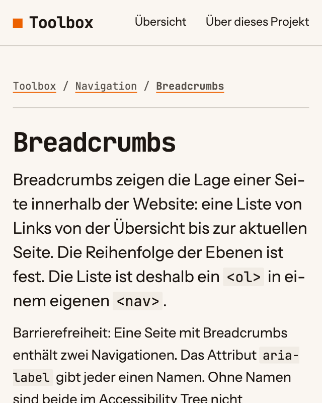

Responsive Images
Das Element <picture> stellt dem Browser mehrere Dateien für ein Bild zur Wahl. Der Browser lädt die erste Datei, deren Bedingung zutrifft.
Demo

Code
<figure>
<picture>
<source media="(width >= 40rem)" srcset="assets/img/eintrag-desktop.png" width="1280" height="800">
<img src="assets/img/eintrag-mobil.png" alt="Die Seite des Eintrags Breadcrumbs: über der Überschrift die Breadcrumbs, unter ihr die Beschreibung in größerer Schrift und der Absatz zur Barrierefreiheit" width="640" height="800">
</picture>
<figcaption>Der Eintrag „Breadcrumbs“ als Beispiel</figcaption>
</figure>Warum
Ein breites Bild ist auf einem schmalen Viewport klein, und sein Text ist nicht lesbar. <picture> enthält deshalb eine zweite Datei mit einem anderen Ausschnitt. Die Demo zeigt ab 40rem Breite des Viewports die breite Variante und darunter die hohe.
Jedes <source> nennt in media eine Bedingung und in srcset eine Datei. Der Browser prüft die Elemente in der Reihenfolge des Quelltexts und verwendet das erste, dessen Bedingung zutrifft. Trifft keine Bedingung zu, lädt er die Datei aus src des <img>.
Der Browser stellt immer das <img> dar. <picture> und <source> tauschen nur die Datei aus. Ohne <img> zeigt die Seite kein Bild. Die Attribute width und height stehen an jedem Element und nennen die Größe der jeweiligen Datei.
Barrierefreiheit
- Der Alt-Text steht am
<img>und gilt für alle Varianten. Die Varianten zeigen deshalb denselben Inhalt. - Eine Variante mit kleinerem Ausschnitt enthält weiterhin alles, was der Alt-Text nennt.
- Die Bedingung in
mediabezieht sich auf die Breite des Viewports in CSS-Pixeln, nicht auf die Auflösung des Bildschirms.